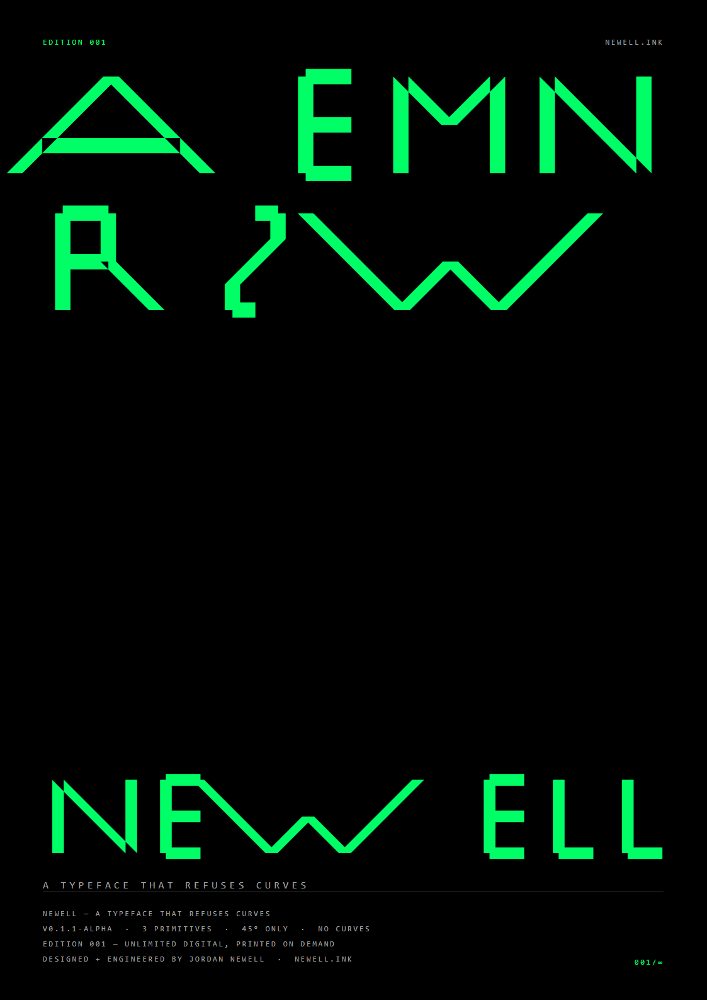

Print / Newell
EDITION 001
One poster. Unlimited digital, printed on demand — no inventory, no scarcity, no shipping. The edition is the file.

Download the PDF Open the sheet
PRINT YOUR OWN
The PDF is exact A3. Any print shop can run it — matte paper,
black-heavy ink coverage, nothing over ~17 KB. Or open
the sheet in a browser and hit
Ctrl/Cmd + P: the @page rule
gives a clean A3, and scale-to-fit handles A2.